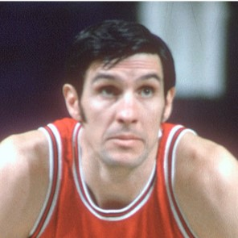

Nos esportes americanos existe uma grande valorização daqueles que geraram impacto na franquia e, diferente de outras países ou esportes não tão populares nos EUA, até aqueles que já defenderam outras equipes após suas atuações na franquia, são lembrados e homenageados.
No entanto, o ápice da homenagem prestado por uma franquia da NBA é, sem dúvida, a "aposentadoria" da camisa utilizada pelo atleta homenageado. Há uma cerimônia solene que apresenta ao público os motivos pelos quais aquela camisa sera içada ao teto do ginásio e jamais poderá ser utilizada novamente por outro atleta.
O Chicago Bulls possui apenas 4 camisas aposentadas e uma homenagem especial ao técnico mais impactante da franquia, são eles, Jerry Sloan, Bob Love, Michael Jordan, Scottie Pippen e Phill Jackson.
|  | |
|
|
|

| Nome | Número | Temporadas pelo Bulls | Data que foi retirado | Atributos |
|---|---|---|---|---|
| Jerry Sloan | 04 | 1966-67 e 1975-76 | 17/02/1978 | Ataque Defesa Passe |

|
||||
| Nome | Número | Temporadas pelo Bulls | Data que foi retirado | Atributos |
|---|---|---|---|---|
| Bob Love | 10 | 1968-69 e 1976-77 | 14/01/1994 | Ataque Defesa Passe |
|
|||||
| Nome | Número | Temporadas pelo Bulls | Data que foi retirado | Atributos | |
|---|---|---|---|---|---|
| Michael Jordan | 23 | 1984-85 a 1992-93 1994-95 a 1997-98 |
01/11/1994 | Ataque Defesa Passe |
|
| *Quando retornou no final da temporada 94-1995 o Bulls teve de pagar uma multa a NBA para que Jordan pudesse voltar a utilizar o número 23. |
|||||
|
||||
| Nome | Número | Temporadas pelo Bulls | Data que foi retirado | Atributos |
|---|---|---|---|---|
| Scottie Pippen | 33 | 1987-88 a 1997-98 e 2003-04 |
09/12/2005 | Ataque Defesa Passe |

|
|||
| Nome | Número | Temporadas pelo Bulls | Data que foi retirado |
|---|---|---|---|
| Phill Jackson | ## | 1987-88–1988-89 (Assistente) 1989-90–1997-98 (Técnico) |
05/05/1999 |